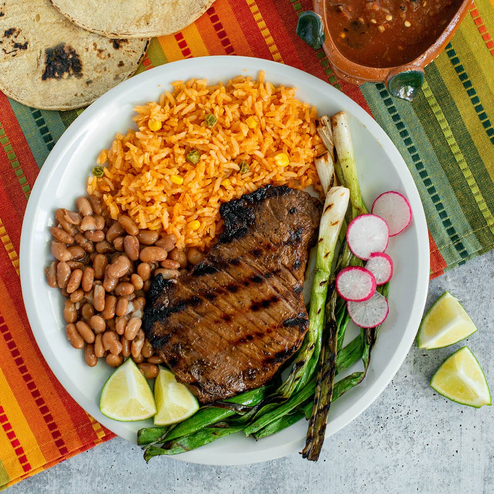

Carne Asada

This carne asada marinade is our family's favorite
A 24-hour soak in a spicy citrus and soy marinade ensures
your flank steak will be perfectly tender when it comes off the grill.
A juicy and flavorful carne asada starts with a delicious carne asada marinade.
This recipe begins with a 24-hour marinade to allow the flank steak to soak up all
the tasty and fresh flavors before grilling.
Ingredients
- 3/4 Cup Orange Juice
- 1/2 Cup Lemon Juice
- 1/3 Cup Lime Juice
- 1 Bunch Fresh Cilantro
- 1/2 Cup Soy Sauce
- 4 Cloves Garlic, Minced
- 1 tbsp Chili Powder
- 1 tbsp Ground Cumin
- 1 tbsp Ground Paprika
- 1 tbsp Ground Black Pepper
- 1 tsp Finely Chopped Chipotle Pepper
- 1 tsp Dried Oregano
- 1/2 Cup Olive Oil
- 3lbs Flank Steak
Steps
- Combine orange juice, lemon juice, and lime juice for marinade in a large
glass or ceramic bowl. Add cilantro, soy sauce, garlic, chili powder, cumin,
paprika, black pepper, chipotle pepper, and oregano; stir to combine.
- Slowly whisk in olive oil until well combined. Remove 1 cup of the marinade
and place in a small bowl; cover with plastic wrap and refrigerate for use after the
steak is cooked.
- Place steak between two sheets of heavy plastic (resealable freezer bags work well)
on a solid, level surface. Firmly pound steak with the smooth side of a meat mallet to a
thickness of 1/4 inch.
- After pounding, poke steak all over with a fork. Place steak in the marinade in the large
bowl, cover, and marinate in the refrigerator for 24 hours.
- When ready to cook, preheat an outdoor grill for medium-high heat, and lightly oil the grate.
- Remove steak from the marinade and shake off excess. Discard the remaining marinade.
- Cook steak on the preheated grill to desired doneness, about 5 minutes per side for medium-rare.
- Remove steak from grill and slice across the grain.
- Place on a serving platter and pour the reserved, unused marinade over top. Serve immediately.